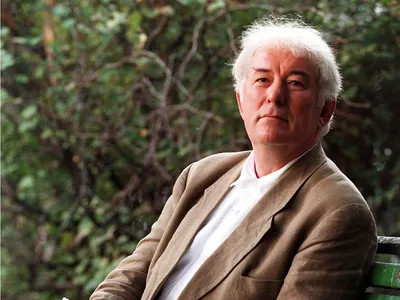

.Seamus Heaney
Viện Hàn lâm Thụy Điển, công bố việc trao giải Nobel văn học 1995 cho Seamus Heaney [Sinh 1939], tuyên bố rằng ông có “những tác phẩm mang vẻ đẹp trữ tình về chiều sâu đạo lý, ca ngợi những nét kỳ diệu của cuộc sống thường nhật và quá khứ sống động”.
Heaney, người Ailen thứ tư đoạt giải văn học uy tín nhất thế giới này tiếp theo William Bulter Yeats (1923), George Bernard Shaw (1925) và Samuel Beckett (1969), đã bỏ Bắc Ailen về sống ở Dublin thuộc Nam Ailen năm 1972 và công khai nói lên tình trạng bạo lực ở Bắc Ailen. Ông còn là một nhà thơ hiếm hoi vừa được giới phê bình ca ngợi lại vừa có những tác phẩm ăn khách nhất. Sinh năm 1939 tại một nông trại ở Mossbawn, quận Derry, Bắc Ailen, ông đã nói đến sứ mệnh nhà thơ trong những khảo luận của mình là “đảm bảo sự tồn tại của cái đẹp, đặc biệt trong những thời buổi mà các chế độ chuyên chế đe dọa hủy họai nó”. Là thành viên của Viện Hàn lâm văn học Ailen, ông được coi là một nhà thơ hàng đầu trong tiếng Anh hiện nay, và là một nhân cách tinh tế và khiêm nhường. Ông tránh né những sự cường điệu của báo chí và việc rùm beng quảng cáo của các nhà xuất bản. Hình ảnh được nhắc lại trong thơ ông là người đào khoai tây, người vét than bùn. Một tập thơ mỏng đã làm ông nổi tiếng thế giới và đưa ông lên địa vị giáo sư về thi ca của trường đại học Oxford và giảng viên tại trường đại học Harvard. Không nghi ngờ gì, ông là một nhà thơ được trọng vọng nhất của một thế hệ nhà thơ sinh ra ở Ailen và được nuôi dưỡng trong vùng đất Bắc Ailen bị xâu xé và xung đột kể từ Đại chiến II. Nhà thơ Mỹ Robert Lowell gọi ông là nhà thơ hay nhất sau Yeats đã từng đoạt giải Nobel năm 1923.
Heaney thì tuyên bố là ông đã mệt mỏi với sự so sánh đó, nhưng cũng thừa nhận sự gần gũi cơ bản giữa ông và Yeats, người mà những tác phẩm cũng cắm rễ sâu vào ý thức không thể chuyển nhượng về bản sắc Ailen của mình.
Nhà thơ Derek Walcott của Trinidad, người đoạt giải Nobel văn học năm 1992, phát biểu: “Là vị thần bảo trợ nền thơ Ailen, Seamus Heaney, giống như bậc tiền bối của ông là Yeats, đã nhận được sự thừa nhận chính đáng”.
Người ta thường nói rằng một nhà thơ thực sự thường không được thừa nhận tại đất nước mình. Nhưng trong trường hợp của Heaney thì họ đã sai. Những người dân ở Londonderry và các vùng phụ cận, nơi nhà thơ sinh ra và sống đời học sinh đã chất đầy những lời ca ngợi lên một nhà thơ không hề làm bộ làm tịch và sống khiêm nhường này. Kể cả những người chưa hề đọc thơ ông như tay chủ quán cũ và những khách hàng của tiệm bia rượu Scruffy Murphy tại phố cổ Dublin, nơi nhà thơ thường lui tới. Michael Bourke nói: “Trước đây tôi đã biết ông khi ông đến uống ở đây. Ông là một người đáng yêu. Giống như nhiều nhà thơ khác, ông thích một cốc bia đậm. Nhưng tôi không biết ông lại thuộc tầm cỡ lớn lao đến như vậy”.
Lớn lên trong một gia đình theo Công giáo ở vùng nông trại Mossbawn, vây bọc bởi những làng quê và những vùng đất sình lầy, rất phong phú về vốn cổ dân gian, những cái đó đã trở thành chất liệu cho rất nhiều bài thơ của ông. Những vần thơ đầu tay của ông xuất hiện trong những tập nhỏ như Bảy bài thơ (1965), và lập tức được đón nhận, được các nhà phê bình ca ngợi về sự chân thành, can đảm, về chất trực cảm và hữu hình. Cũng trong năm đó, ông cưới Maria Devlin, người mà ông đã viết một số những bài thơ hay nhất và sinh cho ông hai trai và một gái. Tác phẩm nối tiếp là Miền Bắc (1957) được coi là tuyệt tác của ông. Tập thơ Những rối ren nói về xung đột giữa những người Tin lành ủng hộ sự cai trị của Anh ở Bắc Ailen và những người Công giáo chống lại nó, đã khiến ông bỏ đến Dublin, thủ phủ miền Nam Ailen năm 1972, tạm thời bỏ nghề dạy học và tập trung hoàn toàn vào việc sáng tác. Tuy nhiên đến năm 1975 ông lại trở lại nghề dạy học, đứng trên bục giảng các trường đại học Mỹ, Anh. Ngôn ngữ và cảm quan thơ của ông, như ông từng nói, “khát khao về một kích thước tiên nghiệm và tôn giáo”, đầy cá tính, tinh tế và đầy ngôn ngữ thơ đến những biên giới cuối cùng của chúng.
Những lời chúc tụng ông vang lên khắp nơi trên thế giới đã nói lên rất nhiều về sự xứng đáng của một tài năng thơ ở tầm cỡ Nobel.
Thơ là hữu hình
Quan niệm của Seamus Heaney về thơ
Trong thế kỷ này, hiếm có nhà thơ lại nhận được những lời khen ngợi nhiều đến thế từ giới phê bình văn học và được độc giả chăm chú theo dõi như Seamus Heaney, người Ailen.
Điểm tập thơ xuất bản mới đây của ông Seeing things (tạm dịch: Những điều trông thấy) tờ Thời báo London đã ví tập thơ ngang hàng với thi phẩm Odes (Tụng ca) của Keats (thi hào Ailen 1795-1821) hay tuyển tập thơ năm 1645 của John Milton (đại thi hào Anh).
Thế nhưng Heaney không dám nhận sự so sánh đó. Một phần do sự khiêm tốn bẩm sinh, nhưng một phần là vì ông vốn là một giáo sư văn học và rất tôn trọng những bậc thầy quá khứ nên có cảm giác bất ổn khi xếp tên ông bên cạnh các bậc tiền bối đó.
Từ những thi phẩm đầu tay, người ta gọi ông là “Yeats mới” một vinh dự kèm theo một gánh nặng khổng lồ. Sinh ra ở quận Derry, ông cảm thấy phải nói lên những rối ren của Bắc Ailen. Thế là, khi đi tìm nơi ẩn cư ở miền Nam để làm điều đó, ông bị lên án là kẻ bỏ cuộc. Tuy vậy ông vẫn dành một phần ngày tháng trong năm để đi dạy tại trường đại học Havard của Mỹ.
Bây giờ thì người ta mặc nhiên coi ông là một trong những nhà thơ hay nhất trong tiếng Anh. Còn ông, với uy tín của mình, ra sức giới thiệu với công chúng Mỹ và châu Âu những tài năng mới của đất nước mình.
Ngoài sự điêu luyện về thi pháp và sự thanh nhã, điều đáng chú ý nhất là cái cách mà ông, thông qua mọi sức ép, đã hướng dẫn dòng trực cảm của mình để thơ bao hàm tính bác học, (trong những bản dịch từ tiếng Ailen, La tinh và Cổ Hy Lạp), nhưng cũng mang đến cho chúng ta những câu thơ trữ tình đẹp đến sững sờ về gia đình, bầu bạn, những dằn vặt của lương tri và cảnh sắc quê hương. Những bài thơ gắn bó với nhau trong tập Seeing things có thể coi là thành công đáng ghi nhớ nhất của ông với một cái nhìn thân quen nhưng lại phổ quát. Ông vẫn là một diễn viên cô đơn trên cái sân khấu sang trọng của văn học, còn chúng ta, đám khán giả, có thể tìm thấy sự thích thú bởi nhạc điệu phong phú của thơ ông và xúc động bởi sự lao động trí tuệ bền bỉ của ông.
Về nhạc điệu trong thơ ông, Heaney cho rằng thơ là một hiện tượng hữu hình. Âm hưởng của thơ xem ra phải đặt lên hàng đầu. Nếu thơ không có âm điệu, tiết tấu hay tạo ra một thể hữu hình nào đó, nó chỉ là những ký hiệu mang tính ngữ nghĩa trên trang giấy và không giữ được mình là thơ nữa. Thơ được in ra khác với văn xuôi. Văn xuôi in theo dòng, chạy từ đầu này đến đầu kia và nhịp điệu của nó không tùy thuộc vào dòng. Còn thơ thì khác. Sự ngắt câu xuống dòng là quan trọng giống như người nông dân đảo đường cày của mình. Dù là thơ truyền thống hay thơ tự do, nó vẫn mang cái kết cấu hữu hình gắn bó với nhà thơ. Heaney cho rằng ông không thể hình dung được có nhà thơ nào tự thâm tâm lại không cảm nhận ra điều đó. Ông nói: “Tôi chỉ có thể nói rằng cảm quan thơ của tôi cũng giống như mọi người, dựa trên việc đọc những mẫu mực thơ truyền thống. Khi tôi đọc Shakespeare, Marlowe, Hopkins, Keats, Eliot hay Yeats, cái hiệu thế dư thừa trong ngôn từ, cái cường độ, sự tự ý thức của ngôn ngữ là những cái tôi gắn với thơ… Có thể nó không phong phú trong phát âm, nhưng nó là nguyên tắc về việc thăng hoa ngôn ngữ. Tôi muốn nói rằng thơ sản sinh ra từ cái thừa thãi của tiềm năng và sức mạnh của ngôn từ. Đấy là cách cường điệu hóa ngôn từ. Đủ sẽ không còn là đủ khi đi vào thơ… Cái thái quá đó có thể là tinh tế hay dè dặt kín đáo, xúc phạm hay lớn lối, nhưng nó là thái quá… Chắc chắn người ta sẽ tìm thấy trong những vần thơ ban đầu của tôi tình yêu tôi đối với sự giàu có của bản thân ngôn từ và tôi đã tìm kiếm một cách hết sức ý thức sự giàu có hữu ích đó. Tôi cho rằng mọi người, đã ý thức về điều đó hay không, đều đáp ứng lại nó, rằng âm thanh mang theo nó những gì nằm ngoài cấu trúc ký hiệu và nói như T.S.Eliot “sự tưởng tượng của thính giác”.